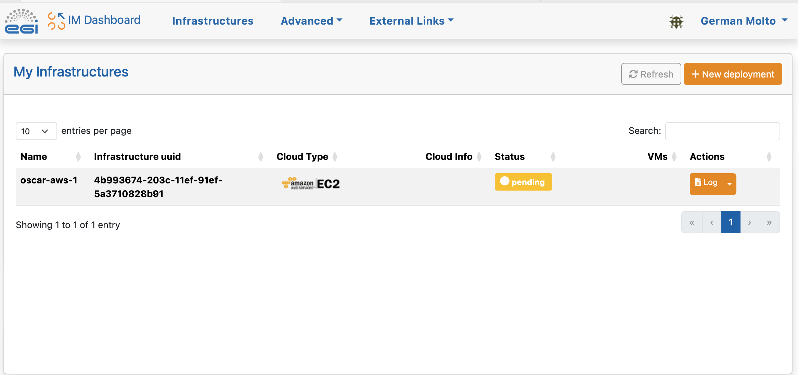

Deployment with IM
An OSCAR cluster can be easily deployed on multiple Cloud platforms via the Infrastructure Manager's Dashboard (IM Dashboard). This is a managed service provided by EGI and operated by the GRyCAP research group at the Universitat Politècnica de València to deploy customized virtual infrastructures across many Cloud providers.
Using the IM Dashboard is the easiest and most convenient approach to deploy an OSCAR cluster. It also automatically allocates a DNS entry and TLS certificates to support HTTPS-based access to the OSCAR cluster and companion services (e.g. MinIO).
This example shows how to deploy an OSCAR cluster on Amazon Web Services (AWS) with two nodes. Thanks to the IM, the very same procedure allows to deploy the OSCAR cluster in an on-premises Cloud (such as OpenStack) or any other Cloud provider supported by the IM.
These are the steps:
-
Access the IM Dashboard

You will need to authenticate via EGI Check-In, which supports multiple Identity Providers (IdP). There is no need to register and the service is provided free of charge.
-
Configure the Cloud Credentials
Once logged in, you need to define the access credentials to the Cloud on which the OSCAR cluster will be deployed. These should be temporary credentials under the principle of least privilege (PoLP).


In our case, we indicate an identifier for the set of credentials, the Access Key ID and the Secret Access Key for an IAM user that has privileges to deploy Virtual Machines in Amazon EC2. With the default values indicated in this tutorial, you will need privileges to deploy the following instance types:
t3a.xlargefor the front-end node andt3a.mediumfor the working node. -
Select the OSCAR template

There are optional features than can be included in the OSCAR cluster to fit particular user needs. We'll skip them.

-
Customize and deploy the OSCAR cluster
In this panel you can specify the number of Working Nodes (WNs) of the cluster together with the computational requirements for each node. We leave the default values.
- Number of WNs in the OSCAR cluster.
- Number of CPUs for the front-end node.
- Amount of Memory (RAM) for the front-end node
- Flavor name of the front-end node. This is only required in case of special flavors (i.e. with GPUs): Instance type that will be selected for the front-end node.
- Number of CPUs for the WNs (Working Nodes).
- Amount of Memory (RAM) for the WNs.
- Flavor name of the WNs. Again, this is only required in case of special flavors
- Size of the extra HD (Hard Disk) added to the node.

In the following panel, specify the passwords to be employed to access the Kubernetes Web UI (Dashboard), to access OSCAR and to access the MinIO dashboard. These passwords/tokens can also be used for programmatic access to the respective services.
- Access Token for the Kubernetes admin user: Used to connect to the Kubernetes Dashboard.
- OSCAR password: To log in to the OSCAR cluster as an admin user.
- MinIO password (8 characters min.).
- Email to be used in the Let's Encrypt issuer.
- ID of the user that creates the infrastructure.
- VO (Virtual Organization) to support: It supports OIDC (OpenID Connect) log in. If empty, only the user who deploys the cluster can log in. If a VO is specified, all the members of the VO can log in the OSCAR cluster.
- Flag to add NVIDIA support: if you want to use NVIDIA.
- Flag to install Apache YuniKorn: if you are going to use YuniKorn.

Now, choose the Cloud provider. The ID specified when creating the Cloud credentials will be shown. You will also need to specify the Amazon Machine Image (AMI) identifier. We chose an AMI based on Ubuntu 20.04 provided by Canonical whose identifier for the us-east-1 region is: ami-09e67e426f25ce0d7
NOTE: You should obtain the AMI identifier for the latest version of the OS. This way, security patches will be already installed. You can obtain this AMI identifier from the AWS Marketplace or the Amazon EC2 service.

Give the infrastructure a name and press "Submit".
-
Check the status of the deployment OSCAR cluster
You will see that the OSCAR cluster is being deployed and the infrastructure reaches the status "running". The process will finish when it reaches the state "configured".

If you are interested in understanding what is happening under the hood you can see the logs:

-
Accessing the OSCAR cluster
Once reached the "configured" state, see the "Outputs" to obtain the different endpoints:
- console_minio_endpoint: To access the MinIO web UI.
- dashboard_endpoint: To access the Kubernetes dashboard.
- local_oscarui_endpoint: To access the OSCAR Dashboard. It supports username/password authentication.
- minio_endpoint: Endpoint where the MinIO API is listening. If you access it through a web browser, you will be redirected to "console_minio_endpoint".
- oscarui_endpoint: To access the OSCAR Dashboard. This one supports both username/password authentication and authentication via EGI Check-In for the user who deployed the OSCAR cluster and the users belonging to the VO specified at deployment time, if any.

The OSCAR Dashboard can be accessed with the username
oscarand the password you specified at deployment time.
The MinIO UI can be accessed with the username
minioand the password you specified at deployment time.
The Kubernetes Dashboard can be accessed with the token you specified at deployment time.

You can obtain statistics about the Kubernetes cluster:

-
Terminating the OSCAR cluster
You can terminate the OSCAR cluster from the IM Dashboard: